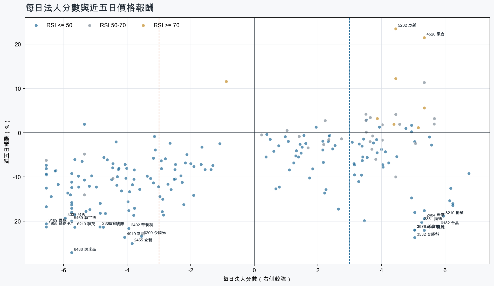
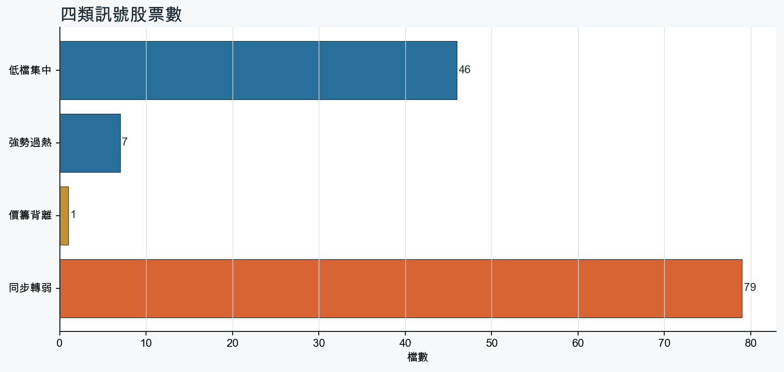
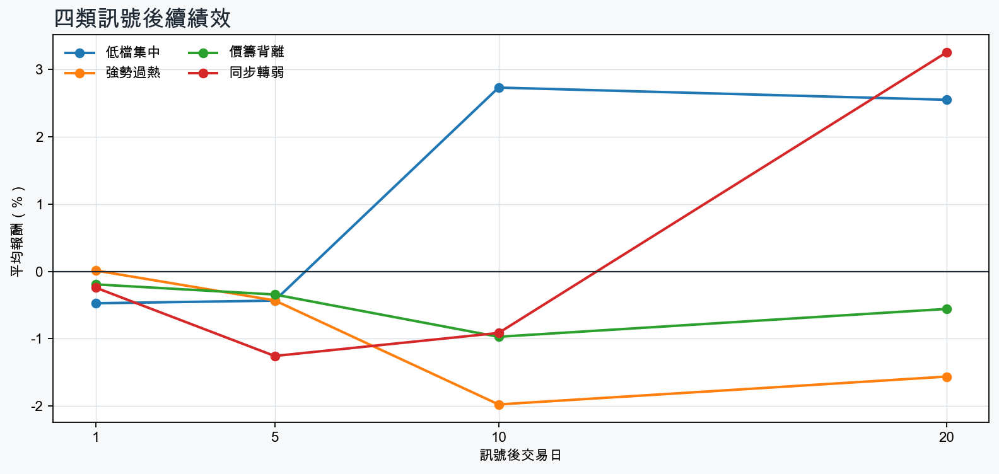

市場情緒偏空
近5日法人合計-11,543,954 張
篩選池上漲比例12.3%
籌碼好 / RSI低15 檔
籌碼差 / 價跌15 檔



EPS × PE VALUATION
法人常用的相對估值
顯示保守、基準與樂觀估值帶，不把單一數字包裝成精準目標價。
最新累計 EPS 依季數年化 × 同產業有效 P/E 的 Q25／中位數／Q75。排除本公司、非正 P/E，並以 1.5×IQR 排除離群值。估值帶是公開資料篩選值，不是法人目標價；未使用分析師預估 EPS。
MOOD × MONEY
情緒與籌碼雷達
熱度代表被討論程度；情緒分與法人方向分開計算。熱門不等於適合追價，樣本不足也不硬判多空。
| 股票 | 情緒 | 討論熱度 | 情緒 × 籌碼 | 情緒 × 基本面 |
|---|---|---|---|---|
| 6488 環球晶同步轉弱 | 情緒低迷 -36.8信心 100 | 1002 篇 / 255 留言 / 3 則新聞 | 情籌雙弱法人分 -5.8 | 基本面與情緒雙弱基本面分 -1.1 |
| 3045 台灣大強勢過熱 | 偏空 -32.6信心 95 | 982 篇 / 233 留言 / 2 則新聞 | 法人布局、市場悲觀法人分 +4.4 | 基本面佳、情緒悲觀基本面分 +1.4 |
| 2303 聯電同步轉弱 | 情緒高漲 +38.9信心 100 | 921 篇 / 161 留言 / 3 則新聞 | 熱門但法人撤退法人分 -4.0 | 基本面與情緒共振基本面分 +3.6 |
| 1102 亞泥低檔集中 | 情緒低迷 -54.2信心 95 | 925 篇 / 137 留言 / 2 則新聞 | 法人布局、市場悲觀法人分 +3.1 | 基本面與情緒分歧基本面分 +0.1 |
| 2412 中華電強勢過熱 | 情緒高漲 +52.4信心 85 | 861 篇 / 107 留言 / 3 則新聞 | 情籌共振法人分 +3.9 | 基本面與情緒共振基本面分 +2.0 |
| 2308 台達電同步轉弱 | 情緒低迷 -70.1信心 82 | 771 篇 / 61 留言 / 3 則新聞 | 情籌雙弱法人分 -4.9 | 基本面佳、情緒悲觀基本面分 +3.6 |
| 1802 台玻低檔集中 | 偏多 +34.9信心 68 | 681 篇 / 29 留言 / 3 則新聞 | 情籌共振法人分 +5.0 | 基本面與情緒共振基本面分 +2.0 |
| 2455 全新同步轉弱 | 中性分歧 +0.0信心 30 | 410 篇 / 0 留言 / 3 則新聞 | 情籌混合法人分 -3.9 | 基本面與情緒分歧基本面分 +3.6 |
| 2409 友達同步轉弱 | 偏空 -29.7信心 30 | 410 篇 / 0 留言 / 3 則新聞 | 情籌雙弱法人分 -4.8 | 基本面與情緒分歧基本面分 -0.6 |
| 3037 欣興同步轉弱 | 偏多 +29.7信心 30 | 410 篇 / 0 留言 / 3 則新聞 | 熱門但法人撤退法人分 -6.0 | 基本面與情緒共振基本面分 +3.6 |
| 4526 東台強勢過熱 | 中性分歧 +0.0信心 30 | 410 篇 / 0 留言 / 3 則新聞 | 情籌混合法人分 +5.3 | 基本面與情緒分歧基本面分 +2.0 |
| 2379 瑞昱低檔集中 | 偏多 +29.7信心 30 | 410 篇 / 0 留言 / 3 則新聞 | 情籌共振法人分 +4.5 | 基本面與情緒共振基本面分 +2.0 |
01
籌碼好 / RSI低
優先研究基本面；法人續買且價格止穩時，才適合分批觀察。
| 股票 / 確認狀態 | 每日法人分 | 浦男式近似 | 法人加速度 | RSI / 相對強弱 | 量價確認 | 融資融券 | 每週集保確認 | 基本面 | EPS × 同業 P/E 估值 | 情緒 / 情籌 | 近期消息 | 論壇討論 |
|---|---|---|---|---|---|---|---|---|---|---|---|---|
| 1802 台玻可研究 · 100 分籌碼與價格確認，可列研究清單 | +5.0法人 +38,254 張 / 3 天 | 命中 · 100站上月線；中期均線偏多；法人籌碼偏多 | +75,312 張近3日 +49,730 / 連續 -1 日 | 49.4相對大盤 +23.9% | 量比 2.04確認分 +6.5價格、量能與籌碼未見明顯弱項 | -%融資 - 張 / 融券 - 張 | +0.74 pp1000張 +0.63 pp | 單月營收年增 +34.1%；累計營收年增 +18.7%仍需觀察下一期財報延續性來源：公開資訊觀測站 | 不適用最新財報缺少可年化 EPS | 偏多 +34.9熱度 68 / 信心 68情籌共振 | 三大法人買賣超 – 外資買超(1802)台玻、(3406)玉晶光，投信買超(2330)台積電、(2454)聯發科，法人合計賣超1464.57億元永豐金證券 · 11/04熱門股》內外資力拱 台玻一度漲停自由財經 · 11/04 | [新聞] 高階玻纖布出貨強勁+產品組合優化 台玻PTT Stock · 11-03 · 29 留言 |
| 2610 華航可研究 · 100 分籌碼與價格確認，可列研究清單 | +3.9法人 +44,411 張 / 4 天 | 命中 · 100站上月線；中期均線偏多；法人籌碼偏多 | +52,287 張近3日 +43,557 / 連續 +3 日 | 47.1相對大盤 +13.4% | 量比 1.21確認分 +6.5價格、量能與籌碼未見明顯弱項 | -%融資 - 張 / 融券 - 張 | +0.77 pp1000張 +0.78 pp | 單月營收年增 +31.9%；累計營收年增 +20.0%仍需觀察下一期財報延續性來源：公開資訊觀測站 | 不適用最新財報缺少可年化 EPS | 樣本不足 +0.0熱度 0 / 信心 0情緒樣本不足 | 近期沒有通過股票語境篩選的新聞 | 近期沒有明確提及本股的論壇樣本 |
| 9904 寶成可研究 · 97 分籌碼與價格確認，可列研究清單 | +4.8法人 +27,428 張 / 4 天 | 接近 · 78中期均線偏多；法人籌碼偏多；法人買盤加速；留意未站月線、基本面中性 | +8,150 張近3日 +12,159 / 連續 -1 日 | 39.7相對大盤 +16.1% | 量比 0.99確認分 +4.5收盤跌破20日線 | -%融資 - 張 / 融券 - 張 | +1.68 pp1000張 +1.65 pp | 單月營收年增 +10.4%累計營收年增 -0.5%來源：公開資訊觀測站 | 不適用最新財報缺少可年化 EPS | 樣本不足 -9.9熱度 25 / 信心 10情緒樣本不足 | 寶成(9904) 11/04 三大法人買賣超CMoney · 11/04 | 近期沒有明確提及本股的論壇樣本 |
| 2609 陽明等待確認 · 80 分籌碼有訊號，但價格尚未確認 | +5.5法人 +31,067 張 / 5 天 | 接近 · 69中期均線偏多；法人籌碼偏多；買超具延續性；留意未站月線、法人買盤未加速 | -4,421 張近3日 +13,429 / 連續 +8 日 | 38.8相對大盤 +17.5% | 量比 0.61確認分 -0.4收盤跌破20日線；成交量不足；法人買盤減速 | -%融資 - 張 / 融券 - 張 | +2.94 pp1000張 +3.04 pp | 單月營收年增 +69.9%；累計營收年增 +17.8%仍需觀察下一期財報延續性來源：公開資訊觀測站 | 不適用最新財報缺少可年化 EPS | 樣本不足 +0.0熱度 0 / 信心 0情緒樣本不足 | 近期沒有通過股票語境篩選的新聞 | 近期沒有明確提及本股的論壇樣本 |
| 2615 萬海可研究 · 92 分籌碼與價格確認，可列研究清單 | +3.3法人 +10,166 張 / 4 天 | 接近 · 86中期均線偏多；法人籌碼偏多；法人買盤加速；留意未站月線、動能位置非最佳 | +8,479 張近3日 +9,881 / 連續 +4 日 | 37.0相對大盤 +15.9% | 量比 1.16確認分 +4.5收盤跌破20日線 | -%融資 - 張 / 融券 - 張 | +0.29 pp1000張 -0.15 pp | 單月營收年增 +97.6%；累計營收年增 +27.3%仍需觀察下一期財報延續性來源：公開資訊觀測站 | 不適用最新財報缺少可年化 EPS | 樣本不足 +0.0熱度 0 / 信心 0情緒樣本不足 | 近期沒有通過股票語境篩選的新聞 | 近期沒有明確提及本股的論壇樣本 |
| 2002 中鋼可研究 · 89 分籌碼與價格確認，可列研究清單 | +3.4法人 +25,178 張 / 5 天 | 接近 · 82中期均線偏多；法人籌碼偏多；法人買盤加速；留意未站月線、動能位置非最佳 | +17,451 張近3日 +23,602 / 連續 +10 日 | 40.5相對大盤 +12.7% | 量比 0.93確認分 +3.9收盤跌破20日線 | -%融資 - 張 / 融券 - 張 | +1.32 pp1000張 +1.34 pp | 單月營收年增 +27.1%；累計營收年增 +6.2%仍需觀察下一期財報延續性來源：公開資訊觀測站 | 不適用最新財報缺少可年化 EPS | 樣本不足 +9.9熱度 25 / 信心 10情緒樣本不足 | 中鋼鋼板供不應求 今年訂單滿載、明年首季接單看旺UDN · 11/04 | 近期沒有明確提及本股的論壇樣本 |
| 3293 鈊象等待確認 · 82 分籌碼有訊號，但價格尚未確認 | +5.6法人 +1,996 張 / 5 天 | 接近 · 68中期均線偏多；法人籌碼偏多；買超具延續性；留意未站月線、法人買盤未加速 | -1,001 張近3日 +488 / 連續 +5 日 | 34.9相對大盤 +9.4% | 量比 0.68確認分 +0.3收盤跌破20日線；法人買盤減速 | -6.4%融資 -124 張 / 融券 -7 張 | +1.63 pp1000張 +1.18 pp | 單月營收年增 +25.3%；累計營收年增 +18.9%仍需觀察下一期財報延續性來源：公開資訊觀測站 | 不適用最新財報缺少可年化 EPS | 樣本不足 +0.0熱度 0 / 信心 0情緒樣本不足 | 近期沒有通過股票語境篩選的新聞 | 近期沒有明確提及本股的論壇樣本 |
| 2034 允強等待確認 · 87 分籌碼有訊號，但價格尚未確認 | +4.0法人 +2,376 張 / 5 天 | 接近 · 72中期均線偏多；法人籌碼偏多；法人買盤加速；留意未站月線、量能異常 | +1,156 張近3日 +1,665 / 連續 +5 日 | 35.8相對大盤 +7.4% | 量比 0.56確認分 +3.0收盤跌破20日線；成交量不足 | -%融資 - 張 / 融券 - 張 | +1.41 pp1000張 +1.07 pp | 單月營收年增 +47.4%；累計營收年增 +4.7%仍需觀察下一期財報延續性來源：公開資訊觀測站 | 不適用最新財報缺少可年化 EPS | 樣本不足 +0.0熱度 0 / 信心 0情緒樣本不足 | 近期沒有通過股票語境篩選的新聞 | 近期沒有明確提及本股的論壇樣本 |
| 2607 榮運可研究 · 85 分籌碼與價格確認，可列研究清單 | +3.5法人 +1,706 張 / 5 天 | 接近 · 90站上月線；中期均線偏多；法人籌碼偏多；留意量能異常 | +2 張近3日 +898 / 連續 +6 日 | 47.4相對大盤 +21.2% | 量比 0.60確認分 +3.1成交量不足 | -%融資 - 張 / 融券 - 張 | -0.04 pp1000張 -0.06 pp | 單月營收年增 +64.7%；累計營收年增 +18.1%仍需觀察下一期財報延續性來源：公開資訊觀測站 | 不適用最新財報缺少可年化 EPS | 樣本不足 +0.0熱度 25 / 信心 10情緒樣本不足 | 【11:10 即時新聞】榮運(2607)小漲整理，AI高附加價值物流續成盤中焦點CMoney · 10/30 | 近期沒有明確提及本股的論壇樣本 |
| 2379 瑞昱等待確認 · 77 分籌碼有訊號，但價格尚未確認 | +4.5法人 +2,236 張 / 5 天 | 接近 · 79中期均線偏多；法人籌碼偏多；買超具延續性；留意未站月線、法人買盤未加速 | -1,560 張近3日 +435 / 連續 +10 日 | 40.7相對大盤 +10.5% | 量比 1.32確認分 +0.5收盤跌破20日線；法人買盤減速 | -%融資 - 張 / 融券 - 張 | +0.14 pp1000張 +0.95 pp | 單月營收年增 +23.4%；累計營收年增 +15.8%仍需觀察下一期財報延續性來源：公開資訊觀測站 | 不適用最新財報缺少可年化 EPS | 偏多 +29.7熱度 41 / 信心 30情籌共振 | 《半導體》瑞昱熬過兩年亂流！外資喊明年營收增18% 目標價衝798元旺得富理財網 · 11/04瑞昱Q3 EPS 8.05元；Q4有望淡季不淡- 新聞MoneyDJ · 10/29 | 近期沒有明確提及本股的論壇樣本 |
| 2851 中再保可研究 · 85 分籌碼與價格確認，可列研究清單 | +3.4法人 +2,991 張 / 5 天 | 接近 · 73中期均線偏多；法人籌碼偏多；法人買盤加速；留意未站月線、量能尚未確認 | +2,431 張近3日 +2,390 / 連續 +5 日 | 36.2相對大盤 +17.4% | 量比 0.81確認分 +3.8收盤跌破20日線 | -%融資 - 張 / 融券 - 張 | +1.13 pp1000張 +0.81 pp | 累計營收年增 +61.6%單月營收年增 -14.9%來源：公開資訊觀測站 | 不適用最新財報缺少可年化 EPS | 樣本不足 +0.0熱度 25 / 信心 10情緒樣本不足 | 【13:00 即時新聞】中再保(2851)盤中微跌守高檔，法人買盤成焦點CMoney投資網誌 · 11/03 | 近期沒有明確提及本股的論壇樣本 |
| 4916 事欣科等待確認 · 68 分籌碼有訊號，但價格尚未確認 | +3.5法人 +2,278 張 / 2 天 | 接近 · 74中期均線偏多；法人籌碼偏多；明顯強於大盤；留意未站月線、法人買盤未加速 | -4,345 張近3日 -547 / 連續 -2 日 | 44.3相對大盤 +4.5% | 量比 0.97確認分 -1.9收盤跌破20日線；法人買盤減速 | -%融資 - 張 / 融券 - 張 | +5.92 pp1000張 +4.32 pp | 單月營收年增 +70.3%；累計營收年增 +63.0%仍需觀察下一期財報延續性來源：公開資訊觀測站 | 不適用最新財報缺少可年化 EPS | 偏多 +29.7熱度 41 / 信心 30情籌共振 | 事欣科大戶逆勢吃貨 低軌衛星、軍工雙引擎點火 2027獲利進入加速期台灣好新聞 · 11/04國防航太低軌衛星旺，事欣科明年營收衝歷史次高- 新聞MoneyDJ · 10/16 | 近期沒有明確提及本股的論壇樣本 |
| 1102 亞泥可研究 · 86 分籌碼與價格確認，可列研究清單 | +3.1法人 +9,989 張 / 5 天 | 接近 · 82中期均線偏多；法人籌碼偏多；法人買盤加速；留意未站月線、基本面中性 | +4,958 張近3日 +6,712 / 連續 +5 日 | 45.7相對大盤 +16.4% | 量比 1.49確認分 +4.2收盤跌破20日線 | -%融資 - 張 / 融券 - 張 | +0.91 pp1000張 +0.98 pp | 單月營收年增 +5.2%累計營收年增 -5.1%來源：公開資訊觀測站 | 不適用最新財報缺少可年化 EPS | 情緒低迷 -54.2熱度 92 / 信心 95法人布局、市場悲觀 | 亞泥股價打67折！上半年EPS暴增、外資狂敲4.4萬張，業外暴賺與本業轉虧多空全解讀理財周刊 · 09/02【13:18 即時新聞】亞泥(1102)盤中小漲，主力與法人買盤續成焦點CMoney投資網誌 · 10/30 | [情報] 1102 上市外資買賣超排行PTT Stock · 11-02 · 84 留言[情報] 1102 上市投信買賣超排行PTT Stock · 11-02 · 36 留言 |
| 2027 大成鋼等待確認 · 74 分籌碼有訊號，但價格尚未確認 | +3.9法人 +7,171 張 / 5 天 | 接近 · 79中期均線偏多；法人籌碼偏多；買超具延續性；留意未站月線、法人買盤未加速 | -1,501 張近3日 +3,105 / 連續 +10 日 | 40.8相對大盤 +13.1% | 量比 1.24確認分 +0.3收盤跌破20日線；法人買盤減速 | -%融資 - 張 / 融券 - 張 | +1.41 pp1000張 +1.16 pp | 單月營收年增 +41.1%；累計營收年增 +35.0%仍需觀察下一期財報延續性來源：公開資訊觀測站 | 不適用最新財報缺少可年化 EPS | 偏多 +29.7熱度 41 / 信心 30情籌共振 | 大成鋼(2027) 今日股價與討論 - 股市爆料同學會CMoney · 10/29事欣科大戶逆勢吃貨 低軌衛星、軍工雙引擎點火 2027獲利進入加速期台灣好新聞 · 11/04 | 近期沒有明確提及本股的論壇樣本 |
| 2542 興富發等待確認 · 76 分籌碼有訊號，但價格尚未確認 | +3.9法人 +10,214 張 / 5 天 | 接近 · 65法人籌碼偏多；法人買盤加速；買超具延續性；留意未站月線、中期均線未翻多 | +944 張近3日 +2,394 / 連續 +5 日 | 34.1相對大盤 +11.9% | 量比 0.74確認分 +0.8收盤跌破20日線；20日線低於60日線 | -%融資 - 張 / 融券 - 張 | +0.56 pp1000張 +0.61 pp | 單月營收年增 +103.7%；累計營收年增 +228.4%仍需觀察下一期財報延續性來源：公開資訊觀測站 | 不適用最新財報缺少可年化 EPS | 樣本不足 +0.0熱度 0 / 信心 0情緒樣本不足 | 近期沒有通過股票語境篩選的新聞 | 近期沒有明確提及本股的論壇樣本 |
02
籌碼好 / RSI高
趨勢強但不追價，等待量縮、RSI降溫或回測支撐。
| 股票 / 確認狀態 | 每日法人分 | 浦男式近似 | 法人加速度 | RSI / 相對強弱 | 量價確認 | 融資融券 | 每週集保確認 | 基本面 | EPS × 同業 P/E 估值 | 情緒 / 情籌 | 近期消息 | 論壇討論 |
|---|---|---|---|---|---|---|---|---|---|---|---|---|
| 3691 碩禾等待拉回 · 91 分等拉回，不追價 | +4.5法人 +1,500 張 / 3 天 | 命中 · 89站上月線；中期均線偏多；法人籌碼偏多；留意法人買盤未加速、動能位置非最佳 | -983 張近3日 +252 / 連續 -1 日 | 74.3相對大盤 +50.7% | 量比 1.45確認分 +2.5法人買盤減速 | -1.6%融資 -92 張 / 融券 +196 張 | +2.03 pp1000張 +4.17 pp | 單月營收年增 +64.2%；累計營收年增 +112.3%仍需觀察下一期財報延續性來源：公開資訊觀測站 | 不適用最新財報缺少可年化 EPS | 偏多 +19.8熱度 35 / 信心 20情籌混合 | 【12:30 即時新聞】碩禾(3691)股價續強，市場聚焦獲利翻正與導電漿題材CMoney投資網誌 · 11/04碩禾9月獲利超越Q2；伺服器用漿料需求旺- 新聞MoneyDJ · 11/03 | 近期沒有明確提及本股的論壇樣本 |
| 4533 協易機等待拉回 · 100 分等拉回，不追價 | +5.3法人 +1,993 張 / 4 天 | 接近 · 82站上月線；中期均線偏多；法人籌碼偏多；留意量能異常、動能位置非最佳 | +1,864 張近3日 +1,676 / 連續 +1 日 | 70.1相對大盤 +33.5% | 量比 5.92確認分 +5.3價格、量能與籌碼未見明顯弱項 | +0.7%融資 +59 張 / 融券 +33 張 | +0.72 pp1000張 +0.16 pp | 單月營收年增 +28.2%；累計營收年增 +0.8%仍需觀察下一期財報延續性來源：公開資訊觀測站 | 不適用最新財報缺少可年化 EPS | 中性分歧 +0.0熱度 35 / 信心 20情籌混合 | 【10:14 即時新聞】協易機(4533)亮燈漲停，工具機題材續受資金追蹤CMoney投資網誌 · 11/044533 協易機 - 哇~預掛漲停，真的賣出了~ - 股市爆料同學會CMoney · 11/04 | 近期沒有明確提及本股的論壇樣本 |
| 4526 東台等待拉回 · 91 分等拉回，不追價 | +5.3法人 +6,411 張 / 4 天 | 接近 · 73站上月線；中期均線偏多；法人籌碼偏多；留意法人買盤未加速、量能異常 | -3,925 張近3日 +3,306 / 連續 -1 日 | 90.1相對大盤 +91.4% | 量比 0.59確認分 +1.1成交量不足；法人買盤減速 | -%融資 - 張 / 融券 - 張 | +9.72 pp1000張 +9.61 pp | 單月營收年增 +81.0%；累計營收年增 +11.0%仍需觀察下一期財報延續性來源：公開資訊觀測站 | 不適用最新財報缺少可年化 EPS | 中性分歧 +0.0熱度 41 / 信心 30情籌混合 | 台股3檔「抓去關」新名單 東台明起處置到11／9ETtoday財經雲 · 10/29【12:16 即時新聞】東台(4526)盤中維持偏強，外資與主力買盤延續CMoney投資網誌 · 11/04 | 近期沒有明確提及本股的論壇樣本 |
| 3045 台灣大等待拉回 · 96 分等拉回，不追價 | +4.4法人 +15,359 張 / 5 天 | 命中 · 92站上月線；中期均線偏多；法人籌碼偏多；留意動能位置非最佳 | +792 張近3日 +9,133 / 連續 +10 日 | 75.8相對大盤 +21.6% | 量比 1.29確認分 +4.8價格、量能與籌碼未見明顯弱項 | -%融資 - 張 / 融券 - 張 | +0.28 pp1000張 +0.35 pp | 單月營收年增 +10.3%；累計營收年增 +5.4%仍需觀察下一期財報延續性來源：公開資訊觀測站 | 不適用最新財報缺少可年化 EPS | 偏空 -32.6熱度 98 / 信心 95法人布局、市場悲觀 | 台灣大併購精誠提前跨過門檻 應賣衝上40.89% 交割後持股過半BigGo 財經 · 11/04《通網股》台灣大收購精誠過關！應賣股數衝破4成 精誠股價卻跌停富聯網 · 11/04 | [標的] 台灣大盤 附停損單 含資訊整理PTT Stock · 10-31 · 214 留言[新聞] 台灣大已收購精誠1.11億股達最低門檻PTT Stock · 11-04 · 19 留言 |
| 2412 中華電等待拉回 · 91 分等拉回，不追價 | +3.9法人 +21,651 張 / 5 天 | 接近 · 83站上月線；中期均線偏多；法人籌碼偏多；留意法人買盤未加速、RSI過熱 | -4,300 張近3日 +9,739 / 連續 +10 日 | 84.2相對大盤 +22.4% | 量比 1.47確認分 +3.8法人買盤減速 | -%融資 - 張 / 融券 - 張 | +0.49 pp1000張 +0.50 pp | 單月營收年增 +20.9%；累計營收年增 +10.8%仍需觀察下一期財報延續性來源：公開資訊觀測站 | 不適用最新財報缺少可年化 EPS | 情緒高漲 +52.4熱度 86 / 信心 85情籌共振 | 《通網股》Gemini變電信新金雞？中華電看好AI訂閱潮一年拚20萬戶- 上市櫃旺得富理財網 · 11/04中華電Q3營收、獲利雙創新高！EPS 1.57元高標| 財經Newtalk新聞 · 11/04 | [心得] 買中華電是不是王道PTT Stock · 11-04 · 107 留言 |
| 9933 中鼎等待拉回 · 83 分等拉回，不追價 | +5.2法人 +5,791 張 / 5 天 | 接近 · 74站上月線；中期均線偏多；法人籌碼偏多；留意法人買盤未加速、基本面偏弱 | -1,711 張近3日 +3,354 / 連續 +10 日 | 72.9相對大盤 +14.8% | 量比 1.98確認分 +2.5法人買盤減速 | -%融資 - 張 / 融券 - 張 | +1.39 pp1000張 +0.64 pp | 單月營收年增 +4.3%累計營收年增 -12.0%來源：公開資訊觀測站 | 不適用最新財報缺少可年化 EPS | 樣本不足 +9.9熱度 25 / 信心 10情緒樣本不足 | 【11:34 即時新聞】中鼎(9933)盤中走強，多頭與工程訂單題材受關注CMoney投資網誌 · 11/04 | 近期沒有明確提及本股的論壇樣本 |
| 5202 力新等待拉回 · 94 分等拉回，不追價 | +4.5法人 +1,679 張 / 3 天 | 接近 · 81站上月線；中期均線偏多；法人籌碼偏多；留意基本面偏弱、動能位置非最佳 | +3,378 張近3日 +2,445 / 連續 +3 日 | 73.2相對大盤 +42.1% | 量比 2.02確認分 +5.9融資單日增幅偏高 | +50.8%融資 +720 張 / 融券 +115 張 | +0.09 pp1000張 +0.13 pp | 尚無明確成長訊號單月營收年增 -25.2%；累計營收年增 -12.3%來源：公開資訊觀測站 | 不適用最新財報缺少可年化 EPS | 中性分歧 +0.0熱度 35 / 信心 20情籌混合 | 【1104台股盤後】大V轉拉出千點下影線！融資追繳宣洩恐慌，避險資金鎖定主本比【台玻】、【大甲】、【力新】永豐金證券 · 11/04力新、廣寰科再飆漲停！台股翻黑瀧澤科、穎漢、天擎、映興齊亮燈彬台、強新、邁達康攻頂鎖不住Yahoo股市 · 11/04 | 近期沒有明確提及本股的論壇樣本 |
03
籌碼差 / 股價上漲
可能是事件行情或軋空；沒有籌碼改善前避免追高。
| 股票 / 確認狀態 | 每日法人分 | 浦男式近似 | 法人加速度 | RSI / 相對強弱 | 量價確認 | 融資融券 | 每週集保確認 | 基本面 | EPS × 同業 P/E 估值 | 情緒 / 情籌 | 近期消息 | 論壇討論 |
|---|---|---|---|---|---|---|---|---|---|---|---|---|
| 4903 聯光通風險警示 · 68 分背離警戒，避免追高 | -5.3法人 -2,467 張 / 1 天 | 接近 · 82站上月線；中期均線偏多；法人買盤加速；留意法人籌碼偏弱、買超延續不足 | +1,574 張近3日 -252 / 連續 -2 日 | 48.8相對大盤 +32.6% | 量比 0.99確認分 +6.5價格、量能與籌碼未見明顯弱項 | +2.0%融資 +90 張 / 融券 +29 張 | +0.95 pp1000張 +2.07 pp | 單月營收年增 +93.8%；累計營收年增 +22.3%仍需觀察下一期財報延續性來源：公開資訊觀測站 | 不適用最新財報缺少可年化 EPS | 樣本不足 +0.0熱度 0 / 信心 0情緒樣本不足 | 近期沒有通過股票語境篩選的新聞 | 近期沒有明確提及本股的論壇樣本 |
04
籌碼差 / 股價下跌
籌碼與價格同弱，原則上迴避，等待法人與大戶同時回補。
| 股票 / 確認狀態 | 每日法人分 | 浦男式近似 | 法人加速度 | RSI / 相對強弱 | 量價確認 | 融資融券 | 每週集保確認 | 基本面 | EPS × 同業 P/E 估值 | 情緒 / 情籌 | 近期消息 | 論壇討論 |
|---|---|---|---|---|---|---|---|---|---|---|---|---|
| 6488 環球晶風險警示 · 0 分迴避，等待籌碼翻正 | -5.8法人 -10,995 張 / 0 天 | 未命中 · 15量價健康；流動性足夠；留意未站月線、中期均線未翻多 | -3,221 張近3日 -7,193 / 連續 -10 日 | 13.6相對大盤 -36.1% | 量比 2.15確認分 -4.4收盤跌破20日線；20日線低於60日線；近20日弱於大盤；法人買盤減速 | -4.8%融資 -551 張 / 融券 +119 張 | -5.86 pp1000張 -7.48 pp | 尚無明確成長訊號單月營收年增 -13.1%；累計營收年增 -4.4%來源：公開資訊觀測站 | 不適用最新財報缺少可年化 EPS | 情緒低迷 -36.8熱度 100 / 信心 100情籌雙弱 | 11/4台股收盤跌358點，環球晶重挫、AI伺服器逆勢漲停口袋證券 · 11/046488 環球晶- 幫高調- 股市爆料同學會CMoney · 11/04 | [新聞] 環球晶 163 億私募 美光全認 董座徐秀蘭PTT Stock · 11-04 · 130 留言[新聞] 環球晶Q3獲利15億、季減6成 前三季EPS達1PTT Stock · 11-03 · 125 留言 |
| 2455 全新風險警示 · 33 分迴避，等待籌碼翻正 | -3.9法人 -2,274 張 / 3 天 | 未命中 · 52中期均線偏多；法人買盤加速；買超具延續性；留意未站月線、法人籌碼偏弱 | +6,178 張近3日 +779 / 連續 +1 日 | 23.8相對大盤 -25.2% | 量比 1.51確認分 -1.0收盤跌破20日線；近20日弱於大盤 | -%融資 - 張 / 融券 - 張 | -2.86 pp1000張 -3.22 pp | 單月營收年增 +29.5%；累計營收年增 +35.0%；2026 Q3 累計 EPS 4.01仍需觀察下一期財報延續性來源：公開資訊觀測站 | 基準 NT$ 108.0估值帶 69.99–178.7現價 384.0 · 高於估值帶 · 距基準 -71.9%2026 Q3 累計 EPS 4.01 → 年化 5.35通信網路同業 P/E 13.09／20.20／33.43 · n=57 · 信心較高以 Q3 累計 EPS 年化，不等同分析師全年預估來源：TWSE／TPEx 每日本益比 | 中性分歧 +0.0熱度 41 / 信心 30情籌混合 | 全新10月營收月增近5%創高；Q4續看增- 新聞MoneyDJ · 11/04車誌/光陽全新黃牌車種米蘭車展亮相 預告明年台灣上市！Yahoo - 汽機車 · 11/04 | 近期沒有明確提及本股的論壇樣本 |
| 4919 新唐風險警示 · 5 分迴避，等待籌碼翻正 | -4.1法人 -2,745 張 / 1 天 | 未命中 · 20中期均線偏多；流動性足夠；留意未站月線、法人籌碼偏弱 | -140 張近3日 -732 / 連續 +1 日 | 24.8相對大盤 -18.8% | 量比 0.83確認分 -4.1收盤跌破20日線；近20日弱於大盤；法人買盤減速 | -%融資 - 張 / 融券 - 張 | -2.34 pp1000張 -2.25 pp | 單月營收年增 +4.7%；累計營收年增 +1.4%2026 Q3 累計 EPS -1.85；2026 Q3 累計營益率 -4.0%來源：公開資訊觀測站 | 不適用年化 EPS 非正數，不適合使用本益比估值 | 樣本不足 +0.0熱度 0 / 信心 0情緒樣本不足 | 近期沒有通過股票語境篩選的新聞 | 近期沒有明確提及本股的論壇樣本 |
| 6213 聯茂風險警示 · 10 分迴避，等待籌碼翻正 | -5.7法人 -9,885 張 / 1 天 | 未命中 · 35中期均線偏多；基本面有支撐；流動性足夠；留意未站月線、法人籌碼偏弱 | -3,236 張近3日 -7,342 / 連續 -1 日 | 24.6相對大盤 -7.1% | 量比 2.59確認分 -4.0收盤跌破20日線；近20日弱於大盤；法人買盤減速 | -%融資 - 張 / 融券 - 張 | -1.09 pp1000張 -1.30 pp | 單月營收年增 +110.7%；累計營收年增 +50.1%仍需觀察下一期財報延續性來源：公開資訊觀測站 | 不適用最新財報缺少可年化 EPS | 樣本不足 +0.0熱度 0 / 信心 0情緒樣本不足 | 近期沒有通過股票語境篩選的新聞 | 近期沒有明確提及本股的論壇樣本 |
| 3189 景碩風險警示 · 26 分迴避，等待籌碼翻正 | -6.5法人 -8,893 張 / 0 天 | 未命中 · 47中期均線偏多；法人買盤加速；量價健康；留意未站月線、法人籌碼偏弱 | +3,019 張近3日 -3,897 / 連續 -7 日 | 30.8相對大盤 -13.5% | 量比 1.50確認分 -1.0收盤跌破20日線；近20日弱於大盤 | -%融資 - 張 / 融券 - 張 | -0.77 pp1000張 -0.81 pp | 單月營收年增 +44.5%；累計營收年增 +33.6%；2026 Q3 累計 EPS 8.38仍需觀察下一期財報延續性來源：公開資訊觀測站 | 基準 NT$ 245.9估值帶 165.1–426.5現價 822.0 · 高於估值帶 · 距基準 -70.1%2026 Q3 累計 EPS 8.38 → 年化 11.17半導體同業 P/E 14.78／22.01／38.17 · n=149 · 信心較高以 Q3 累計 EPS 年化，不等同分析師全年預估來源：TWSE／TPEx 每日本益比 | 樣本不足 +0.0熱度 25 / 信心 10情緒樣本不足 | 聯發科、景碩…11檔「ABC概念股」低接首選！產業隊長：台股修正波後的投資主旋律| 雜誌UDN · 11/04 | 近期沒有明確提及本股的論壇樣本 |
| 6147 頎邦風險警示 · 32 分迴避，等待籌碼翻正 | -4.8法人 -11,254 張 / 2 天 | 未命中 · 47中期均線偏多；法人買盤加速；量價健康；留意未站月線、法人籌碼偏弱 | +5,211 張近3日 -166 / 連續 +1 日 | 27.0相對大盤 -7.6% | 量比 0.91確認分 -0.9收盤跌破20日線；近20日弱於大盤 | -1.7%融資 -546 張 / 融券 -3 張 | -1.41 pp1000張 -2.18 pp | 單月營收年增 +27.9%；累計營收年增 +24.3%；2026 Q3 累計 EPS 4.33仍需觀察下一期財報延續性來源：公開資訊觀測站 | 基準 NT$ 127.1估值帶 85.33–220.4現價 175.0 · 估值帶內 · 距基準 -27.4%2026 Q3 累計 EPS 4.33 → 年化 5.77半導體同業 P/E 14.78／22.01／38.17 · n=149 · 信心較高以 Q3 累計 EPS 年化，不等同分析師全年預估來源：TWSE／TPEx 每日本益比 | 樣本不足 +0.0熱度 0 / 信心 0情緒樣本不足 | 近期沒有通過股票語境篩選的新聞 | 近期沒有明確提及本股的論壇樣本 |
| 2308 台達電風險警示 · 32 分迴避，等待籌碼翻正 | -4.9法人 -20,166 張 / 0 天 | 未命中 · 37法人買盤加速；量價健康；基本面有支撐；留意未站月線、中期均線未翻多 | +11,258 張近3日 -4,872 / 連續 -10 日 | 12.1相對大盤 -27.8% | 量比 2.21確認分 -1.0收盤跌破20日線；20日線低於60日線；近20日弱於大盤 | -%融資 - 張 / 融券 - 張 | -0.99 pp1000張 -0.87 pp | 單月營收年增 +14.6%；累計營收年增 +37.2%；2026 Q3 累計 EPS 26.64仍需觀察下一期財報延續性來源：公開資訊觀測站 | 基準 NT$ 798.1估值帶 565.1–1,267現價 1,220 · 估值帶內 · 距基準 -34.6%2026 Q3 累計 EPS 26.64 → 年化 35.52電子零組件同業 P/E 15.91／22.47／35.68 · n=145 · 信心較高以 Q3 累計 EPS 年化，不等同分析師全年預估來源：TWSE／TPEx 每日本益比 | 情緒低迷 -70.1熱度 77 / 信心 82情籌雙弱 | 股價腰斬、毛利連降 台達電的競爭力真的衰退了嗎？理財周刊 · 11/04鴻海逆襲權值三哥！台達電腰斬「災難還是周年慶打折？」 蔡明翰揭三率下滑真相- 上市櫃旺得富理財網 · 11/04 | [新聞] 1表看》台達電4次暴跌逾25％ 從2年→59天PTT Stock · 11-02 · 61 留言 |
| 4958 臻鼎-KY風險警示 · 26 分迴避，等待籌碼翻正 | -6.5法人 -18,254 張 / 0 天 | 未命中 · 47中期均線偏多；法人買盤加速；量價健康；留意未站月線、法人籌碼偏弱 | +3,309 張近3日 -7,132 / 連續 -5 日 | 29.9相對大盤 -13.4% | 量比 1.24確認分 -1.0收盤跌破20日線；近20日弱於大盤 | -%融資 - 張 / 融券 - 張 | +1.02 pp1000張 +0.67 pp | 單月營收年增 +36.1%；累計營收年增 +22.4%仍需觀察下一期財報延續性來源：公開資訊觀測站 | 不適用最新財報缺少可年化 EPS | 樣本不足 +0.0熱度 0 / 信心 0情緒樣本不足 | 近期沒有通過股票語境篩選的新聞 | 近期沒有明確提及本股的論壇樣本 |
| 2409 友達風險警示 · 11 分迴避，等待籌碼翻正 | -4.8法人 -96,059 張 / 1 天 | 未命中 · 27中期均線偏多；法人買盤加速；流動性足夠；留意未站月線、法人籌碼偏弱 | +11,468 張近3日 -3,331 / 連續 -2 日 | 30.9相對大盤 -14.1% | 量比 0.66確認分 -1.9收盤跌破20日線；近20日弱於大盤 | -%融資 - 張 / 融券 - 張 | -7.76 pp1000張 -7.84 pp | 尚無明確成長訊號單月營收年增 -4.3%；累計營收年增 -2.1%來源：公開資訊觀測站 | 不適用最新財報缺少可年化 EPS | 偏空 -29.7熱度 41 / 信心 30情籌雙弱 | 197億元賣廠案告吹！友達慘摔34％ 「2字頭」能撿？金控投顧說話了最新目標價、評等1次看- 上市櫃旺得富理財網 · 11/04友達跌回29元起漲點、聯電1個月慘摔逾3成！南亞科、華邦電跌停...熱門股跌深能抄底？進場訊號一次看今周刊 · 11/03 | 近期沒有明確提及本股的論壇樣本 |
| 2327 國巨*風險警示 · 12 分迴避，等待籌碼翻正 | -5.8法人 -30,869 張 / 0 天 | 未命中 · 37法人買盤加速；量價健康；基本面有支撐；留意未站月線、中期均線未翻多 | +726 張近3日 -11,356 / 連續 -5 日 | 19.9相對大盤 -16.9% | 量比 1.25確認分 -2.6收盤跌破20日線；20日線低於60日線；近20日弱於大盤 | -%融資 - 張 / 融券 - 張 | -3.56 pp1000張 -4.12 pp | 單月營收年增 +46.1%；累計營收年增 +36.3%仍需觀察下一期財報延續性來源：公開資訊觀測站 | 不適用最新財報缺少可年化 EPS | 中性分歧 +0.0熱度 35 / 信心 20情籌混合 | 國巨*股價跌破前低456.5元 股民嘆：奪魂鋸變斷魂鋸自由財經 · 11/03【即時新聞】國巨(2327)跌破前低重挫逾5％，這「4檔概念股」盤中賣壓湧現！CMoney · 11/04 | 近期沒有明確提及本股的論壇樣本 |
| 3264 欣銓風險警示 · 23 分迴避，等待籌碼翻正 | -5.8法人 -6,346 張 / 0 天 | 未命中 · 42中期均線偏多；法人買盤加速；基本面有支撐；留意未站月線、法人籌碼偏弱 | +13,979 張近3日 -3,092 / 連續 -6 日 | 17.3相對大盤 -7.0% | 量比 0.67確認分 -0.9收盤跌破20日線；近20日弱於大盤 | -7.2%融資 -1,033 張 / 融券 -29 張 | -6.87 pp1000張 -7.43 pp | 單月營收年增 +46.9%；累計營收年增 +35.4%；2026 Q3 累計 EPS 7.49仍需觀察下一期財報延續性來源：公開資訊觀測站 | 基準 NT$ 222.5估值帶 147.6–381.2現價 197.0 · 估值帶內 · 距基準 +12.9%2026 Q3 累計 EPS 7.49 → 年化 9.99半導體同業 P/E 14.78／22.28／38.17 · n=149 · 信心較高以 Q3 累計 EPS 年化，不等同分析師全年預估來源：TWSE／TPEx 每日本益比 | 樣本不足 +0.0熱度 0 / 信心 0情緒樣本不足 | 近期沒有通過股票語境篩選的新聞 | 近期沒有明確提及本股的論壇樣本 |
| 6770 力積電風險警示 · 0 分迴避，等待籌碼翻正 | -6.5法人 -105,892 張 / 0 天 | 未命中 · 30量價健康；基本面有支撐；流動性足夠；留意未站月線、中期均線未翻多 | -68,974 張近3日 -78,186 / 連續 -5 日 | 29.4相對大盤 -10.2% | 量比 1.25確認分 -5.0收盤跌破20日線；20日線低於60日線；近20日弱於大盤；法人買盤減速 | -%融資 - 張 / 融券 - 張 | -4.14 pp1000張 -4.05 pp | 單月營收年增 +94.0%；累計營收年增 +52.5%仍需觀察下一期財報延續性來源：公開資訊觀測站 | 不適用最新財報缺少可年化 EPS | 偏空 -19.8熱度 35 / 信心 20情籌混合 | 南亞科、華邦電、旺宏、力積電…記憶體股殺逾半根跌停，它被外資狂倒貨逾4萬張，法人圈也砍目標價今周刊 · 11/04訊號來了？融資大逃殺229億「餘額跌破6000億大關」 聯電、友達、力積電…重災區籌碼動向一次看- 上市櫃旺得富理財網 · 11/04 | 近期沒有明確提及本股的論壇樣本 |
| 3037 欣興風險警示 · 8 分迴避，等待籌碼翻正 | -6.0法人 -13,967 張 / 0 天 | 未命中 · 40中期均線偏多；量價健康；基本面有支撐；留意未站月線、法人籌碼偏弱 | -3,895 張近3日 -9,616 / 連續 -7 日 | 24.1相對大盤 -21.6% | 量比 1.93確認分 -5.0收盤跌破20日線；近20日弱於大盤；法人買盤減速 | -%融資 - 張 / 融券 - 張 | -0.95 pp1000張 -1.30 pp | 單月營收年增 +64.7%；累計營收年增 +37.7%；2026 Q3 累計 EPS 17.85仍需觀察下一期財報延續性來源：公開資訊觀測站 | 基準 NT$ 534.8估值帶 378.7–849.2現價 888.0 · 高於估值帶 · 距基準 -39.8%2026 Q3 累計 EPS 17.85 → 年化 23.80電子零組件同業 P/E 15.91／22.47／35.68 · n=145 · 信心較高以 Q3 累計 EPS 年化，不等同分析師全年預估來源：TWSE／TPEx 每日本益比 | 偏多 +29.7熱度 41 / 信心 30熱門但法人撤退 | 【即時新聞】欣興(3037)獲利百億股價卻遇逆風，這「3檔概念股」逢低卡位時機到？CMoney · 11/04【即時新聞】欣興近日急殺失守千元大關，外資轉向狂砍3722張還能追嗎？CMoney · 11/04 | 近期沒有明確提及本股的論壇樣本 |
| 8150 南茂風險警示 · 6 分迴避，等待籌碼翻正 | -5.8法人 -12,396 張 / 0 天 | 未命中 · 42中期均線偏多；法人買盤加速；基本面有支撐；留意未站月線、法人籌碼偏弱 | +122 張近3日 -6,814 / 連續 -6 日 | 18.5相對大盤 -20.8% | 量比 0.65確認分 -3.5收盤跌破20日線；近20日弱於大盤 | -%融資 - 張 / 融券 - 張 | -4.43 pp1000張 -5.05 pp | 單月營收年增 +33.8%；累計營收年增 +30.5%仍需觀察下一期財報延續性來源：公開資訊觀測站 | 不適用最新財報缺少可年化 EPS | 樣本不足 +0.0熱度 0 / 信心 0情緒樣本不足 | 近期沒有通過股票語境篩選的新聞 | 近期沒有明確提及本股的論壇樣本 |
| 2303 聯電風險警示 · 30 分迴避，等待籌碼翻正 | -4.0法人 -202,823 張 / 2 天 | 未命中 · 37法人買盤加速；量價健康；基本面有支撐；留意未站月線、中期均線未翻多 | +162,264 張近3日 -14,147 / 連續 -1 日 | 16.5相對大盤 -19.4% | 量比 1.14確認分 -1.0收盤跌破20日線；20日線低於60日線；近20日弱於大盤 | -%融資 - 張 / 融券 - 張 | -5.46 pp1000張 -5.43 pp | 單月營收年增 +27.2%；累計營收年增 +16.1%；2026 Q3 累計 EPS 6.00仍需觀察下一期財報延續性來源：公開資訊觀測站 | 基準 NT$ 178.2估值帶 118.2–305.4現價 105.5 · 低於估值帶 · 距基準 +69.0%2026 Q3 累計 EPS 6.00 → 年化 8.00半導體同業 P/E 14.78／22.28／38.17 · n=149 · 信心較高以 Q3 累計 EPS 年化，不等同分析師全年預估來源：TWSE／TPEx 每日本益比 | 情緒高漲 +38.9熱度 92 / 信心 100熱門但法人撤退 | 護盤了？ 台股跌幅收斂逾千點 聯電、日月光、台塑三寶翻紅Yahoo股市 · 11/04聯電奪光通訊重量級大單 價格為傳統製程七倍 挹注獲利大躍進經濟日報 · 11/02 | [新聞] 聯電奪光通訊重量級大單 價格為傳統製程PTT Stock · 11-02 · 161 留言 |
BACKTEST
長期規律追蹤
每次訊號後自動補算1、5、10、20個交易日報酬；樣本不足時不做結論。

| 訊號組別 | 1日 | 5日 | 10日 | 20日 |
|---|---|---|---|---|
| 低檔集中 | -0.47%勝率 44% / n=394 | -0.43%勝率 45% / n=289 | +2.73%勝率 51% / n=231 | +2.55%勝率 51% / n=196 |
| 強勢過熱 | +0.01%勝率 44% / n=1206 | -0.43%勝率 44% / n=1164 | -1.98%勝率 39% / n=1017 | -1.56%勝率 44% / n=640 |
| 價籌背離 | -0.19%勝率 42% / n=925 | -0.34%勝率 42% / n=911 | -0.97%勝率 35% / n=847 | -0.56%勝率 41% / n=618 |
| 同步轉弱 | -0.24%勝率 44% / n=2384 | -1.26%勝率 39% / n=2135 | -0.91%勝率 43% / n=1835 | +3.25%勝率 54% / n=1284 |
SENTIMENT
市場消息溫度
新聞與公開論壇只作為情緒代理變數；反諷、同溫層和熱門事件都可能造成偏差，因此同步顯示樣本與信心度。
- 外資狂倒1499億誰接走？投信276億逆勢撐盤 台股41855點上演千點V轉 - 理財周刊理財周刊
- 三大法人》狂砍台股1597億元！外資連5賣、單日提款近1500億，投信逆勢連17買 | 下班經濟學 | 財經 - 風傳媒風傳媒
- 史上第5大賣超！外資狂提款1498億 投信獨撐「這幾檔」力挺 - 三立新聞三立新聞
- 大盤震盪近1,900點！外資「連5賣」、狂提款台股1,499億 投信逆勢「連17買」 - Newtalk新聞Newtalk新聞
- 台股史上第5大提款！外資狠砍約1499億 - 自由財經自由財經
- 外資狂提款1498億 投信力挺「這幾檔」 - 鏡週刊Mirror Media鏡週刊Mirror Media
- 外資再砍735億元、投信大買361億元！台股失守 45K 三大法人賣超526億元 - 經濟日報經濟日報
- 台股暴跌後收斂外資賣超不止！今再提款1498億寫史上第五大| 財經焦點 - 太報 TaiSounds太報 TaiSounds